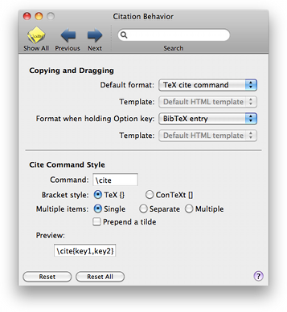

Citation
Citation
The Citation preference pane lets you set what gets copied and dragged by default
to other applcations from BibDesk.

Copying and Dragging: This controls what gets dropped (or copied) on a drag (or copy).
The alternate default format is used when the Option key is held down during the drag (or copy).
Cite Command Style: This lets you define the default cite command style that is used when dragging TeX cite commands from the publication table.
- The citation text field lets you change the string that is used when dragging from the publications table to whatever you like (e.g. citep or citet ...).
- Bracket Style lets you choose to use square brackets for copy/paste and dragging citations, for compatibility with ConTeXt.
- Separate Citations lets you choose whether to have bibdesk drop strings like \cite{key1,key2} or \cite{key1} \cite{key2} when multiple items are involved.
- Prepend a tilde lets you add an extra tilde before the command name.